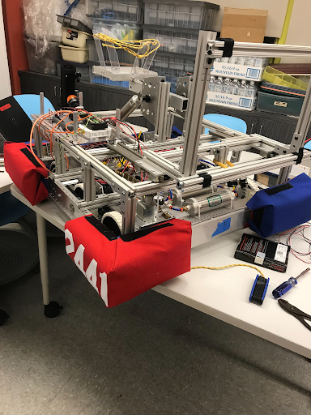
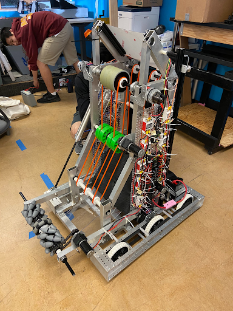

From 2018 to 2020 I was in my highschool’s robotics team. We were team 2441(Spartechs) from Maryknoll Highschool. We competed in the FIRST Robotics Competition(FRC). FRC is an international highschool robotics competition. Each year, teams are given a challenge to build a robot to complete a series of tasks. The challenge changes every year. The challenge is released in January, and teams have limited time to build a robot to compete. In 2018, the dealine was 6 weeks. In 2019 and 2020, the dealine was extended to a 3 months.
We were a small team of under 10 members. On this team, I was the lead of programming and electrical. I also dabbled in mechanical work and machining parts. Every member of the team was responsible of designing the robot together. I competed on the team for 3 seasons. Every year, we competed at the FRC Hawaii Regional. In 2019, we got 2nd place and received a wild card slot. This allowed us to compete in 2019 championships.
As the lead of programming and electrical, I was responsible for coding the robot, wiring the electrical componenents, and running tubing for pneumatics. I also took up tasks in machining parts for the robots frame and mechanisms, as well as, assembly of the robot. I was also responsible for teaching new members how to program and wire the robot.
I currently do not have a picture of the robot from 2018. This robot was designed as a moving ramp with a claw mechanism to move around a milk crate. The robot was programmed in C++. The robot code can be found here: Team2441_2018_FRC

This my teams 2019 robot. This robot was designed to pick up and deposit velcro-lined polycarbonate disks, and to launch balls. This robot was programmed in Java. The robot code can be found here: Team2441_2019_FRC

This my teams 2020 robot. This robot was designed to pick up and launch balls, and climb an elevated bar. This robot was programmed in Java. The robot code can be found here: Team2441_2020_FRC